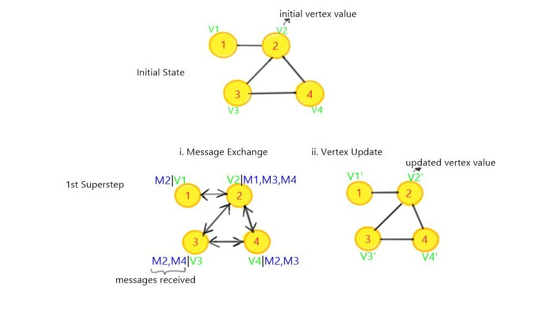

Iterative Graph Processing
Vertex-centric iterations
In this tutorial, we are going to discuss the vertex-centric iterative model provided by Gelly.
In the vertex-centric model computations proceed in synchronized iteration steps, called supersteps. In each superstep, a vertex produces messages for other vertices and updates its value based on the messages it receives. To use vertex-centric iterations in Gelly, you only needs to define two functions that determine the behaviour of a Vertex in each superstep:
- MessagingFunction(): produces the messages that a vertex will send to other vertices.
- VertexUpdateFunction(): updates the vertex value using the received messages.
The above two functions and the maximum number of iterations to run, are given as parameters to Gelly’s runVertexCentricIteration(). This method will execute the vertex-centric iteration on the input Graph and return a new Graph, with updated vertex values.
Let's understand this better with an example. We are going to consider a simplified implementation of the PageRank algorithm.
A few words about PageRank
PageRank is a numeric value that represents the importance of a page on the web and is used by Google to rank websites in their search engine results. In short, the output of the algorithm is a probability distribution used to represent the likelihood that a person randomly clicking on links will arrive at any particular page. For details, have a good read of the wikipedia article.
Hands on
In each superstep:
- Each vertex sends a rank message to all of its neighbors, distributing the rank according to edge weights.
/**
* Distributes the rank of a vertex among all target vertices according to
* the transition probability, which is associated with an edge as the edge
* value.
*/
@SuppressWarnings("serial")
public static final class RankMessenger<K> extends MessagingFunction<K, Double, Double, Double> {
private final long numVertices;
public RankMessenger(long numberOfVertices) {
this.numVertices = numberOfVertices;
}
@Override
public void sendMessages(Vertex<K, Double> vertex) {
if (getSuperstepNumber() == 1) {
// initialize vertex values during the first superstep
vertex.setValue(new Double(1.0 / numVertices));
}
for (Edge<K, Double> edge : getEdges()) {
sendMessageTo(edge.getTarget(), vertex.getValue() * edge.getValue());
}
}
}
/**
* Function that updates the rank of a vertex by summing up the partial
* ranks from all incoming messages and then applying the dampening formula.
*/
@SuppressWarnings("serial")
public static final class VertexRankUpdater<K> extends VertexUpdateFunction<K, Double, Double> {
private final double beta;
private final long numVertices;
public VertexRankUpdater(double beta, long numberOfVertices) {
this.beta = beta;
this.numVertices = numberOfVertices;
}
@Override
public void updateVertex(Vertex<K, Double> vertex, MessageIterator<Double> inMessages) {
double rankSum = 0.0;
// sum the incoming partial ranks
for (double msg : inMessages) {
rankSum += msg;
}
// apply the dampening formula
double newRank = (beta * rankSum) + (1 - beta) / numVertices;
// update Vertex value
setNewVertexValue(newRank);
}
}
The algorithm converges when there are no value updates. If the value of a Vertex does not change during a superstep, it will not send any messages in the superstep. This allows to do incremental updates to the changing parts of the graph, while leaving steady parts untouched. The computation terminates after a specified maximum number of supersteps or when convergence is reached.

The output is a DataSet of vertices, where the Vertex value is the rank of the given Vertex.
You can find the full implementation here.
It is to be noted that in our simple implementation, it is assumed that all the nodes have at least an incoming and an outgoing edge. Why this? Well, because as you can notice, a node updates its rank value according to the dampening formula, only when it receives a message from a neighbor. So if a node never receives a message, it's final rank will not be compliant with the theoretical value.
If we run the PageRankAlgorithm using the Graph obtained from the twitter data set, then we obtain the output as shown in the figure below:

Configuring a Vertex-Centric Iteration
A vertex-centric iteration can be configured using a VertexCentricConfiguration object. Currently, the following parameters can be specified: Name,Parallelism, Aggregators, Broadcast Variables, Number of Vertices, Degrees, Messaging Direction. You can find more details regarding these parameters at this link.
For example, if we want to access the total number of vertices and the degree information of a node within an iteration, then we need to set these options to true and pass the updated parameter to the vertex-centric iteration. This allows us to retrieve the required information both within the VertexUpdateFunction and the MessagingFunction as shown below.
// configure the iteration
VertexCentricConfiguration parameters = new VertexCentricConfiguration();
// set the number of vertices option to true
parameters.setOptNumVertices(true);
// set the degree option to true
parameters.setOptDegrees(true);
// run the vertex-centric iteration, also passing the configuration parameters
Graph<Long, Double, Double> result =
graph.runVertexCentricIteration(
new VertexUpdater(), new Messenger(), maxIterations, parameters);
// user-defined functions
public static final class VertexUpdater {
// get the number of vertices
long numVertices = getNumberOfVertices();
// retrieve the vertex out-degree
outDegree = getOutDegree();
.....
}
}
What's next?
To not overload you with information, we will consider the Gather-sum-apply iterative model in the next tutorial. But before moving on, try your hand at the vertex-centric iterations.